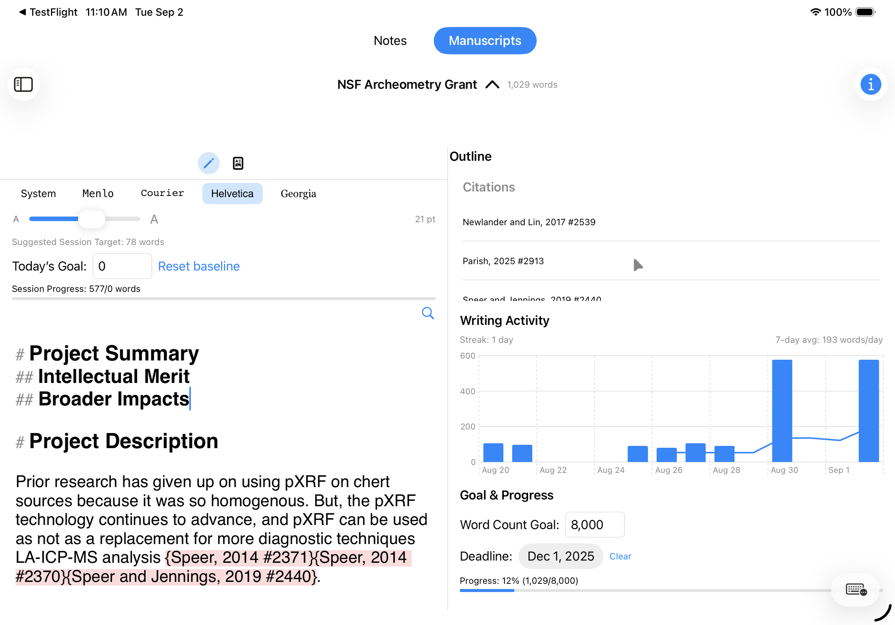
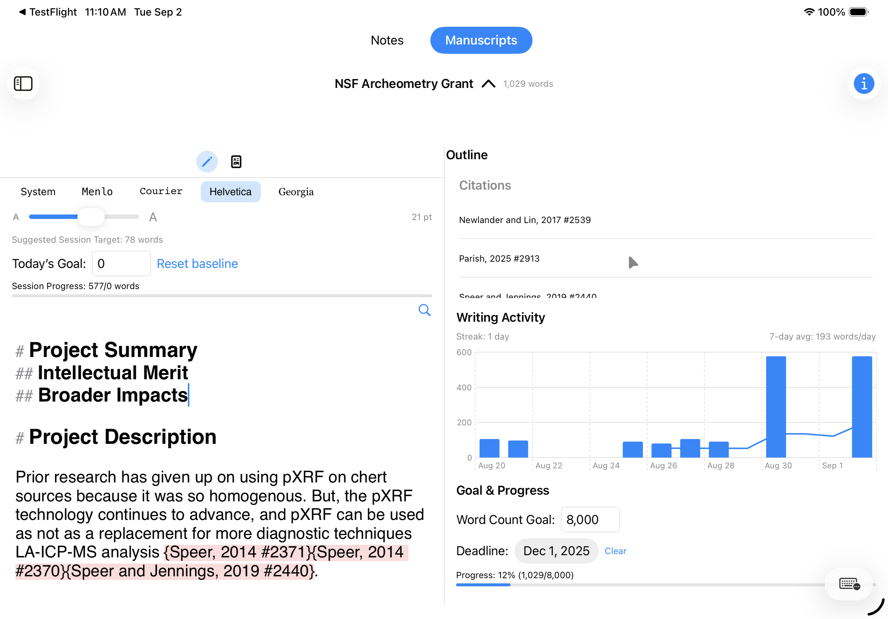

StrataWrite
Drafting & note networkResearch-first drafting with linked notes, tags, and clean exports.
- Markdown + plaintext exports
- Bi-directional links and tags
- Word-count goals and progress tracking
A research-first writing app for macOS and iPadOS. Clean drafting, daily word-count goals, and reliable exports.
Platforms: macOS & iPadOS.
Best for: note taking and creating first drafts of manuscripts.
Data: notes and manuscripts sync is managed via Apple CloudKit. Export Notes and Manuscripts as plaintext or Markdown.
Contact: stance@mac.com
Features: Markdown writing, bi-directional links, tags, Apple Writing Assistant, supports Sonny Software Bookends deep linking in notes, Apple Foundation Models.
Apple Native: Text editors are SwiftUI with the use of Attributed Strings and all native Apple APIs.
Focused drafting: A clean editor designed for both note taking and creating manuscript first drafts. Focus on getting the words out, minimal formatting support. No image or table support.
Daily momentum: Built-in word-count goals with lightweight progress tracking to keep projects moving.
Straightforward exports: Get your work out cleanly as Markdown (.md) or plain text (.txt).
macOS + iPadOS: Native performance and familiar interactions across your devices.
Simple by design: Essentials for research writing, without excess configuration.
A focused set of research tools designed to work together: discover, read, take notes, and write.
Research-first drafting with linked notes, tags, and clean exports.
A PDF-first reading environment designed to keep annotations active and connected to your thinking tools.
A lightweight discovery and triage tool built to help you keep up with new papers and explore topics.
 
